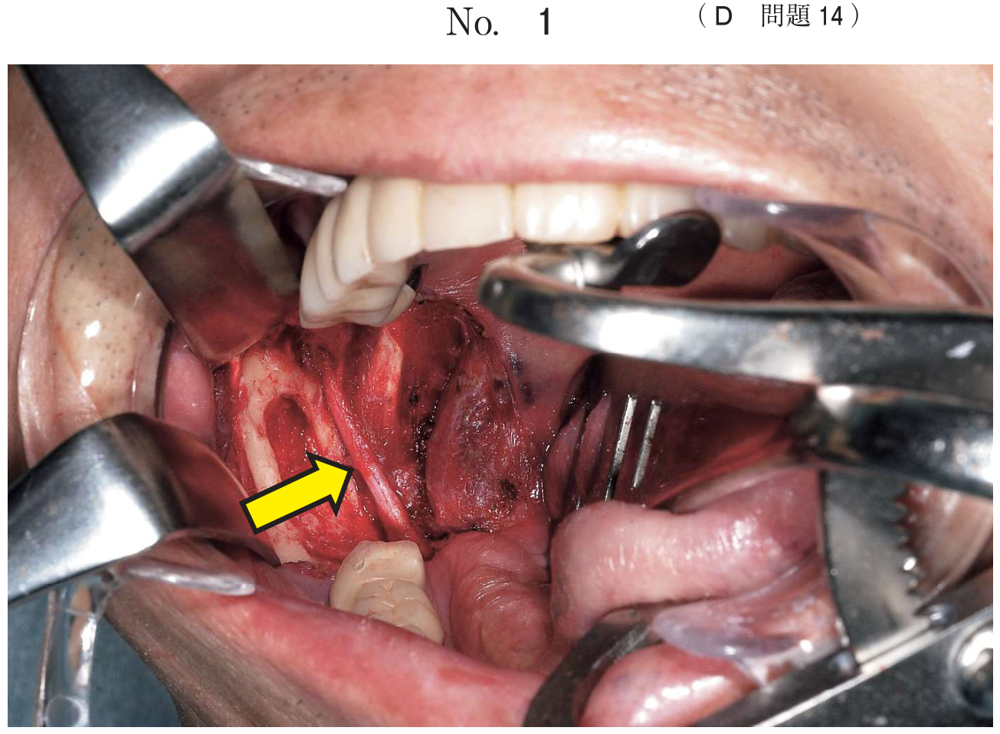
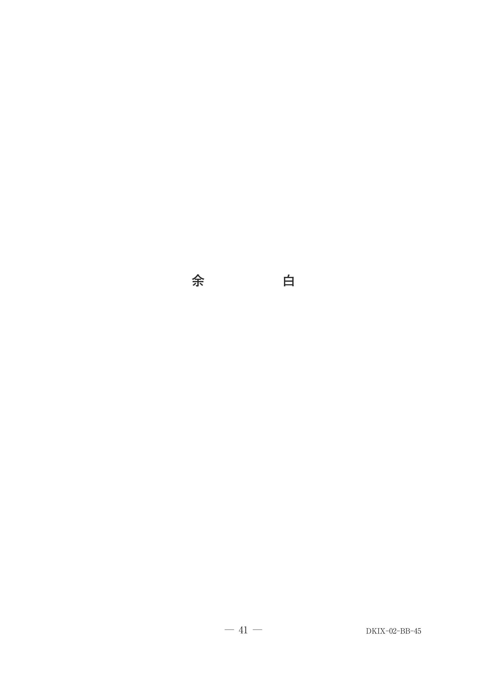

口腔粘膜疾患
1. 白板症（leukoplakia）
白板症はWHO（1978）で「摩擦によって除去できない白斑で、他の診断可能な疾患に分類できないもの」と定義された。現在は口腔潜在的悪性疾患（OPMD）の枠組みで扱われる代表病変であり、臨床的な除外診断名である。
臨床型分類
| 臨床型 | 特徴 | 癌化リスク |
|---|---|---|
| 均一型 | 均一な白色、平坦またはやや皺状 | 比較的低い |
| 非均一型：斑状型 | 紅斑を背景に白斑が散在（紅白斑症） | 高い |
| 非均一型：結節型 | 小さな表面隆起 | |
| 非均一型：疣贅型 | いぼ状、波状の白色表面 |
- 癌化率：0.4〜6.0%（教科書）、メタアナリシスでは約7%
- 舌・口底（可動粘膜）に発生するものは癌化しやすい
- 確定診断には部分（切開）生検が必要
- 対応：禁煙指導、歯の鋭縁の削合、定期観察、必要に応じ外科的切除
- 副腎皮質ステロイド軟膏は無効（白板症は炎症性疾患ではない）
白板症と鑑別すべき疾患
| 疾患 | 鑑別ポイント |
|---|---|
| 口腔カンジダ症（偽膜性） | ガーゼで拭き取れる |
| 口腔扁平苔癬 | Wickham線条、両側性 |
| 白色海綿状母斑 | 常染色体優性遺伝、幼少期から |
| 摩擦性角化症 | 原因除去で消失 |
| ニコチン性口内炎 | 口蓋に好発、喫煙者 |
78歳の男性。右側舌縁部の疼痛を主訴として来院した。6か月前に自覚し、かかりつけ歯科医で副腎皮質ステロイド軟膏の処方を受けているが、再発を繰り返しているという。50年間毎日20本以上喫煙しており、飲酒歴はない。初診時の舌縁の写真（別冊No.21）を別に示す。
適切な対応はどれか。3つ選べ。

b 禁煙支援
c 舌部分切除
d 抗菌薬の投与
e 歯の鋭縁の確認
【解説】舌縁部の白斑＋長期喫煙歴＋ステロイド無効→白板症を疑う。白板症は炎症性疾患ではないためステロイドは無効。細胞診で悪性の有無を確認、禁煙支援で発癌リスクを低減、歯の鋭縁確認で機械的刺激を排除する。生検前の段階で舌部分切除は過剰。
62歳の男性。舌の異常を主訴として来院した。1週前に歯科治療時に指摘され、精査を勧められたという。自覚症状はなく、圧痛は認めないが周囲に比べやや硬い。初診時の口腔内写真（別冊No.5A）と生検時のH-E染色病理組織像（別冊No.5B）を別に示す。
診断名はどれか。1つ選べ。


b 扁平上皮癌
c 口腔扁平苔癬
d 口腔カンジダ症
e 白色海綿状母斑
【解説】舌に無症状の白斑、やや硬い→白板症。病理組織像で上皮の過角化・異形成を確認。扁平上皮癌は浸潤・硬結が著明。OLPは網状のWickham線条が特徴。カンジダ症は拭き取り可能。白色海綿状母斑は遺伝性で幼少期から。
舌白板症患者への対応で適切なのはどれか。2つ選べ。
b 糖質制限の指導
c 歯の鋭縁の削合
d マウスガードの装着
e 副腎皮質ステロイド軟膏の塗布
【解説】白板症の対応は誘因の除去が基本。喫煙は白板症の主要な誘因であり禁煙指導は必須。歯の鋭縁による機械的刺激も誘因となるため削合する。ステロイドは白板症には無効（OLPやアフタに使用）。
63歳の男性。舌の異常を主訴として来院した。舌縁部に接触痛や硬結を伴わない病変を認める。初診時の口腔内写真（別冊No.9）を別に示す。
確定診断に必要な検査はどれか。1つ選べ。

b 針生検
c 造影CT
d 部分(切開)生検
e 口腔内超音波検査
【解説】舌縁部の白斑→白板症を疑う。確定診断には部分（切開）生検で病理組織検査を行う。PET・造影CTは悪性腫瘍の広がりを評価するもので確定診断には使えない。針生検は深部腫瘍向きで表在性病変には不適。
72歳の男性。歯科医院で右側舌縁部の白斑を指摘され、紹介により来院した。2年前に気付いたが疼痛はなく、性状も大きさも変化はないという。初診時の口腔内写真（別冊No.45A）と生検時のH−E染色病理組織像（別冊No.45B）を別に示す。
考えられる対応はどれか。2つ選べ。


b 副腎皮質ステロイド軟膏塗布
c 放射線照射
d 抗癌剤投与
e 外科的切除
【解説】舌縁部白板症→異形成の程度に応じて対応を決定。軽度であれば定期的診察で経過観察、異形成が強い場合や範囲が広い場合は外科的切除。放射線照射・抗癌剤は悪性腫瘍の治療であり白板症には過剰。ステロイドは無効。
2. 口腔扁平苔癬（OLP）
口腔扁平苔癬は口腔粘膜の角化異常を伴う慢性炎症性疾患で、発生率は0.1〜4%。中年以降の女性に好発する。
6つの臨床型（WHO分類）
| 型 | カテゴリ | 特徴 | 症状 |
|---|---|---|---|
| 網状型 | 白色型 | Wickham線条（白色レース状模様） | 無症状 |
| 丘疹型 | 白色丘疹 | 無症状 | |
| 斑状型 | 白板症様の白色斑 | 無症状 | |
| 萎縮型 | 紅色型 | 紅斑＋萎縮性変化 | 有症状 |
| びらん型 | びらん・潰瘍 | 最も症状が強い | |
| 水疱型 | 水疱形成（まれ） | 有症状 |
- 網状型が最多。頬粘膜に好発、両側性
- 組織学的に上皮基底層の液状変性、上皮下の帯状リンパ球浸潤が特徴的
- 治療の第一選択は局所ステロイド（ケナログなど）
- ステロイド抵抗性にはタクロリムス軟膏
- 口腔潜在的悪性疾患（OPMD）に分類。悪性転化率は概ね1%前後（報告差あり）
- 金属アレルギーに関連する場合はOLL（oral lichenoid lesion）
OLP vs OLL（oral lichenoid lesion）
| OLP | OLL | |
|---|---|---|
| 原因 | 特発性（原因不明） | 原因が同定可能（金属、薬剤、GVHDなど） |
| 分布 | 両側性・対称性 | 片側性・非対称のことが多い |
| 原因除去 | 不可 | 原因除去で改善の可能性 |
副腎皮質ステロイド軟膏が奏効するのはどれか。2つ選べ。
b 疱疹性口内炎
c 口腔扁平苔癬
d 口腔カンジダ症
e 慢性再発性アフタ
【解説】ステロイド軟膏が有効なのは炎症性・免疫異常による疾患。口腔扁平苔癬は慢性炎症性疾患でステロイドが第一選択。慢性再発性アフタも免疫異常が関与しステロイドが有効。白板症は角化異常で無効。疱疹性口内炎はウイルス性でステロイドは禁忌（ウイルス増殖を助長）。カンジダ症は真菌感染でステロイドは増悪因子。
口腔粘膜の扁平苔癬様症状と両側掌の膿疱を呈する患者に行う検査はどれか。1つ選べ。
b トロンボテスト
c プリックテスト
d スクラッチテスト
e ローズベンガルテスト
【解説】扁平苔癬様症状＋掌蹠膿疱症→歯科金属アレルギーを疑う。歯科用金属が原因でOLL（oral lichenoid lesion）と掌蹠膿疱症を同時に発症することがある。パッチテスト（IV型アレルギーの検査）で原因金属を特定する。プリックテスト・スクラッチテストはI型アレルギーの検査。トロンボテストは凝固能検査。ローズベンガルテストはドライアイの検査。
3. 口腔の潰瘍・粘膜炎
褥瘡性潰瘍（decubital ulcer）
義歯の不適合、歯の鋭縁、矯正装置などの機械的刺激が持続することで生じる潰瘍。舌、頬粘膜、歯肉に好発する。
- 治療の基本は原因（刺激）の除去
- 原因を除去すれば通常1〜2週間で治癒
- 長期間治癒しない潰瘍は悪性腫瘍との鑑別が必要
化学療法による口腔粘膜炎
化学療法（抗がん剤）の副作用として発症。投与後5〜14日頃に出現し、粘膜のびらん・潰瘍を形成する。
- 対応：口腔の保湿、創傷被覆保護剤の塗布、局所麻酔薬添加含嗽剤
- CO2レーザー照射は不適切（粘膜障害を増悪させる）
- 二次感染の予防・管理が重要
壊死性潰瘍性口内炎
紡錘菌とスピロヘータの混合感染による急性口内炎。壊死に陥った歯肉や口腔粘膜に偽膜が形成され、重症化するとVincent angina（口峡炎）に至る。抵抗力の低下した小児や老人に好発。
舌の褥瘡性潰瘍への対応として適切なのはどれか。1つ選べ。
b 鎮痛薬投与
c 抗菌薬投与
d 外科的切除
e レーザー焼灼
【解説】褥瘡性潰瘍の治療は原因となる機械的刺激の除去が第一。歯の鋭縁の削合、不適合義歯の調整・修理で刺激を取り除けば自然治癒する。鎮痛薬は対症療法で根本治療ではない。外科的切除やレーザーは不要。
65歳の女性。両側頬粘膜の接触時痛を主訴として来院した。10日前からホジキンリンパ腫に対して血液内科で化学療法を受けている。病変は両側の頬粘膜から口角に及び、易出血性である。初診時の口腔内写真（別冊No.9）を別に示す。
適切な対応はどれか。3つ選べ。

b 抗真菌薬の投与
c CO2レーザーの照射
d 創傷被覆保護剤の塗布
e 局所麻酔薬添加含嗽剤の使用
【解説】化学療法後10日→口腔粘膜炎。対応は口腔保湿で乾燥防止、創傷被覆保護剤で物理的保護、局所麻酔薬添加含嗽剤で疼痛管理。抗真菌薬はカンジダ症が合併していれば投与するが、本症例では粘膜炎が主体。CO2レーザーは粘膜障害を増悪させるため不適切。
1週前に発症した病変の写真（別冊No.4）を別に示す。
発症に関連すると考えられる既往症はどれか。1つ選べ。

b 脳梗塞
c 上顎洞炎
d 慢性腎不全
e ウイルス性肝炎
【解説】写真は口蓋部の病変で、上顎洞炎に関連した粘膜病変と考えられる。上顎洞炎では上顎洞底に近接する口蓋粘膜・歯肉に炎症が波及し、瘻孔や腫脹、潰瘍を形成することがある。歯性上顎洞炎では上顎臼歯部の感染が上顎洞に波及する。
4. 再発性アフタ性口内炎
口腔粘膜に再発を繰り返すアフタ（有痛性の円形〜楕円形の浅い潰瘍）。非角化粘膜（口唇、頬、舌）に好発する。原因は不明だがHLA-B51との関連が示唆されている。
3つの型の比較
| 小アフタ型 | 大アフタ型 | 疱疹状潰瘍型 | |
|---|---|---|---|
| 頻度 | 最多（70〜80%） | 約10% | 約10% |
| 大きさ | 10mm未満 | 10mm以上 | 1〜3mm |
| 個数 | 1〜5個 | 1〜数個 | 多数（10〜100個） |
| 治癒期間 | 7〜14日 | 6週間以上 | 約1か月 |
| 瘢痕 | なし | あり | 通常なし |
- Behcet病の主症状4項目：口腔粘膜の再発性アフタ、皮膚症状、眼症状、外陰部潰瘍
- 口腔アフタはBehcet病でほぼ必発（98%以上）、初発症状であることが多い
- HLA-B51陽性がBehcet病の遺伝的素因
- 針反応（pathergy test）陽性も参考所見
5. 舌の疾患
地図状舌（geographic tongue）
舌背の糸状乳頭が消失した紅斑部と、周囲の黄白色の帯状隆起縁が融合して地図状を呈する。小児や若い女性に多い。
- 最大の特徴：病変が日ごとに移動する（良性移動性舌炎）
- 多くは無症状。刺激物摂取時にピリピリ感を生じることがある
- 溝状舌との合併が多い
- 組織学的には乾癬に酷似（Munro微小膿瘍を認める）
- 治療は対症療法（含嗽剤）。自覚症状がなければ経過観察
その他の舌の疾患
| 疾患 | 特徴 |
|---|---|
| 溝状舌 | 舌背の多数の溝。遺伝的。Down症候群、Melkersson-Rosenthal症候群で高頻度 |
| 正中菱形舌炎 | 舌背正中の分界溝前方に赤みを帯びた菱形の病変。カンジダ症との関連 |
| 黒毛舌 | 糸状乳頭の過伸長＋着色。抗菌薬長期使用、カンジダ症が原因 |
| 苺状舌 | 猩紅熱（A群溶連菌）の口腔症状。急性熱性疾患 |
| 平滑舌（Hunter舌炎） | 悪性貧血（ビタミンB12欠乏）。糸状乳頭の萎縮 |
| Plummer-Vinson症候群 | 鉄欠乏性貧血＋舌炎＋嚥下障害 |
69歳の女性。舌の痛みを主訴として来院した。半年前から疼痛の出現と消退を繰り返しているという。初診時の口腔内写真（別冊No.28）を別に示す。
適切な対応はどれか。1つ選べ。

b 舌縮小術
c 含嗽剤の処方
d 抗菌薬の処方
e レーザー照射
【解説】「疼痛の出現と消退を繰り返す」→地図状舌を示唆。地図状舌は良性疾患であり、生検は不要。治療は対症療法で含嗽剤の処方が適切。抗菌薬は感染症でないため無効。レーザー照射は不要。
急性熱性疾患で生じるのはどれか。1つ選べ。
b 溝状舌
c 平滑舌
d 苺状舌
e 黒毛舌
【解説】苺状舌は猩紅熱（A群β溶血性連鎖球菌感染）で認められる舌の変化で、急性熱性疾患に伴う。舌粘膜の発赤を背景に肥大した茸状乳頭が苺様の外観を呈する。溝状舌は先天性。平滑舌は慢性的な貧血。黒毛舌は抗菌薬長期使用など。巨舌はアミロイドーシスや甲状腺機能低下症など。
6. Fordyce斑
Fordyce斑は異所性皮脂腺（ectopic sebaceous glands）で、疾患ではなく正常構造物のバリエーションである。
- 好発部位：頬粘膜（最多）、口唇
- 臨床所見：淡黄色〜白色の小丘疹（1〜3mm）、散在性〜集簇性
- 自覚症状：なし
- 成人の70〜80%に認められる
- 治療は不要
55歳の男性。頰粘膜の異常を主訴として来院した。口腔内写真（別冊No.18）を別に示す。
考えられるのはどれか。1つ選べ。

b 類天疱瘡
c Fordyce斑
d 口腔扁平苔癬
e 口腔カンジダ症
【解説】頬粘膜の淡黄色小丘疹→Fordyce斑（異所性皮脂腺）。白板症は白色の板状病変。類天疱瘡は水疱・びらん。OLPはWickham線条を伴うレース状の白色病変。カンジダ症は白色偽膜で拭き取れる。Fordyce斑は治療不要で正常バリエーション。
7. 口腔粘膜疾患の鑑別まとめ
白色病変の鑑別
| 疾患 | 拭き取り | 分布 | 治療 |
|---|---|---|---|
| 白板症 | 不可 | 片側性が多い | 禁煙・刺激除去・切除 |
| OLP | 不可 | 両側性 | ステロイド軟膏 |
| 口腔カンジダ症 | 可能 | さまざま | 抗真菌薬 |
| Fordyce斑 | 不可 | 頬粘膜 | 治療不要 |
ステロイド軟膏の適応・禁忌
| 有効 | 無効・禁忌 |
|---|---|
| 口腔扁平苔癬 | 白板症（角化異常） |
| 再発性アフタ | 疱疹性口内炎（ウイルス増殖を助長） |
| 多形滲出性紅斑（重症例） | 口腔カンジダ症（増悪因子） |